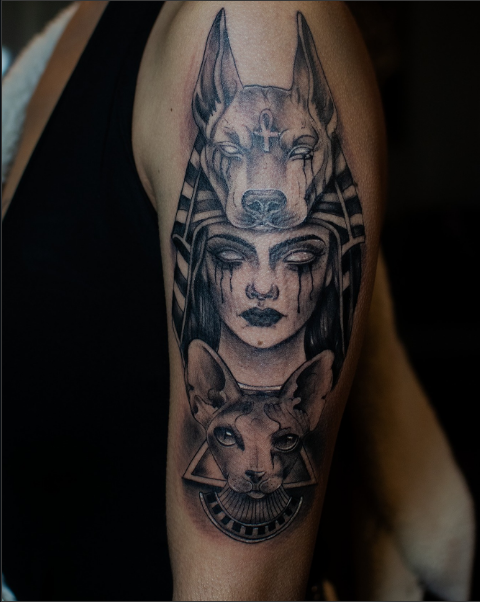
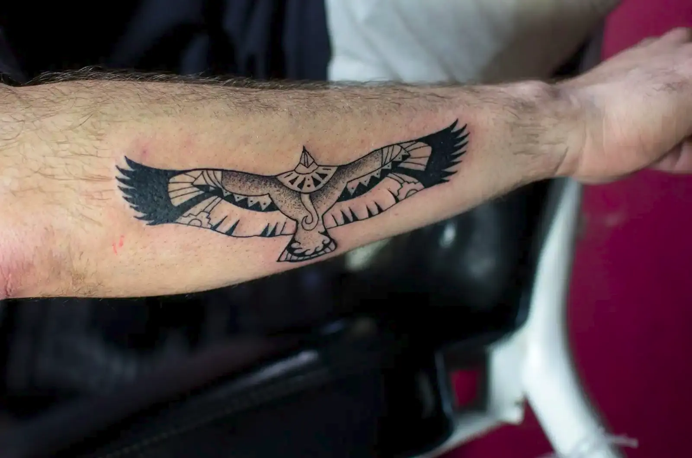
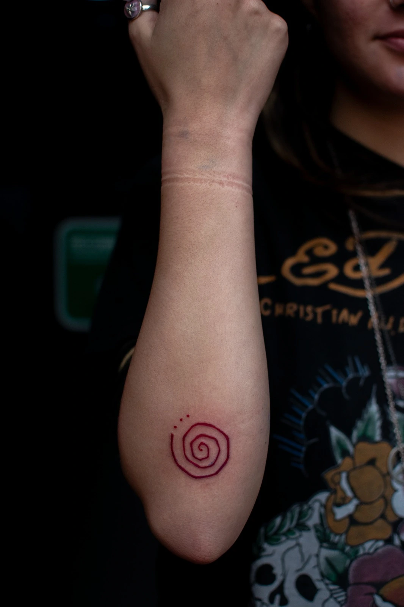
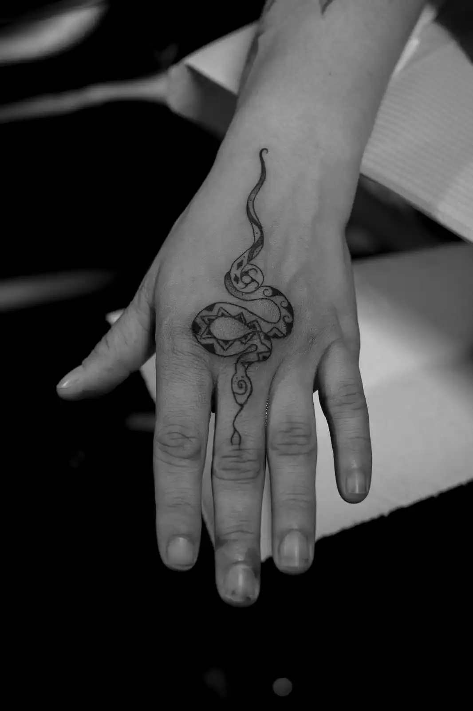
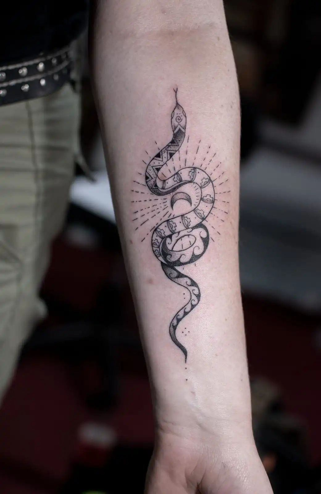

WALK INK Tattoo
CUSCO
Galería
Seguridad
Cotizar

Walk Ink Tattoo
Autor - Ángel Padilla
Portafolio
Galería de Autor
Realismo

Aves & Ancestral

Minimal

Fine Line

Blackwork
"Diseños que respetan la anatomía y la historia."
Protocolos
Bioseguridad & Calidad
En
Walk Ink
Estudio Profesional